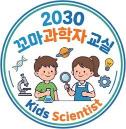

2030 꼬마과학자 교실
Kids Scientist · 이 활동을 운영하는 프로그램이에요
연결된 센서 0개
센서를 하나씩 추가하세요(버튼을 누를 때마다 1개). 개수 제한은 없어요.
여러 개를 쓸 땐 USB를 권해요 — 전원 공급형 USB 허브로 8개 안팎까지 안정적이에요. 블루투스는 4개 이내가 안전해요.
조도·색도 센서처럼 채널이 여러 개인 기기는 아래 📡 채널 선택에서 볼 값을 켜고 끌 수 있어요.